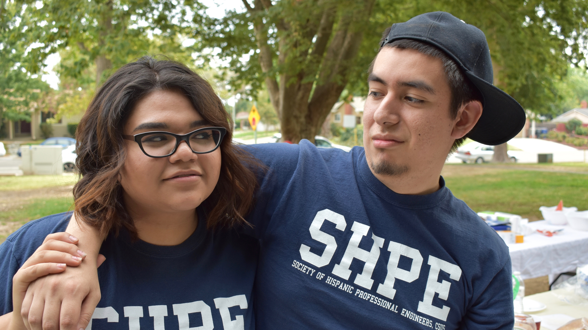
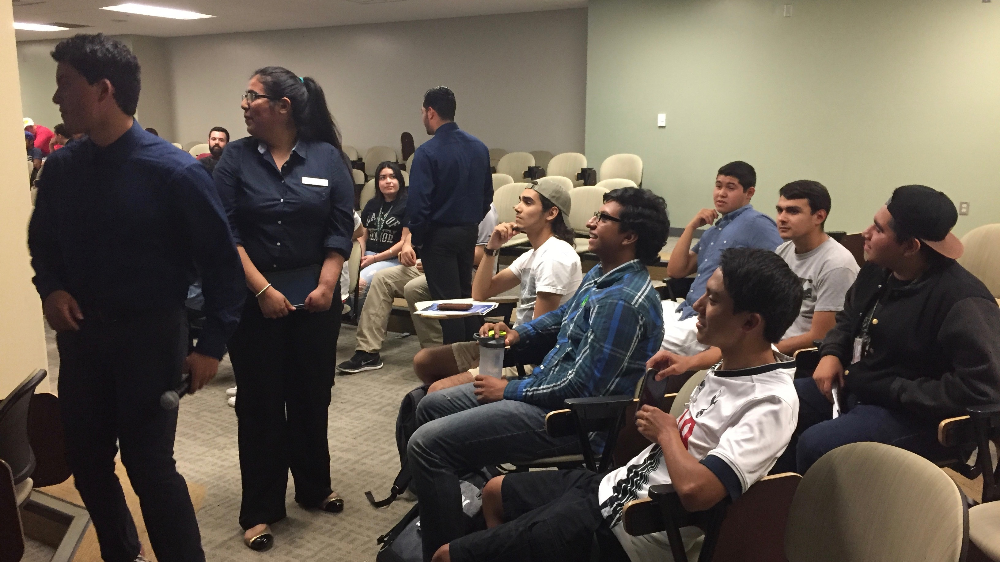

Photo Credit: Augustine Orozco


SHPE changes lives by empowering the Hispanic community to realize its fullest potential and to impact the world through STEM awareness, access, support & development.
SHPE's vision is a world where Hispanics are highly valued and influential as leading innovators, scientists, mathematicians and engineers.
Over the past few years, the CSU Sacramento SHPE student chapter has transformed itself from a small, relatively unknown, chapter into a competitive and well-recognized chapter. During the 2012-2013 Scholastic year, the chapter implemented a new bylaw system that brought a higher level of activity to the chapter. These improvements were reflected in both National Reporting Program reports submitted in 2012 – 2013, Fall 2014, and Spring 2015; reports scored over 800 out of 900 points. All of the growth and accomplishments have been acknowledged at SHPE National Conferences where CSUS-SHPE was awarded with Large Chapter of the year in 2015, Regional Outstanding Chapter Awards in 2012, 2013, 2014, 2015, and 2016, and also first 1st place for the 1st inaugural Hackathon at the SHPE Conference.
The newly developed bylaws have also allowed for the creation of well-rounded high performing students. By focusing on promoting professional development and leadership skills among our members, we provide various avenues for members to reveal their full potential. The chapter strives to achieve academic excellence and retention among our members. We aim to inspire Hispanic youth to pursue higher education through awareness, access, and support in STEM. Our chapter also reciprocates the abundant support from the Scholastic, local, and Hispanic communities.
We implemented committees in 2011 that allowed the officer board to increase the membership participation, and focus the efforts of the chapter. The membership has been actively involved in yearlong committees dedicated to Academic Development, Events, Fundraising, Outreach, Professional Development, Web Development, Historian and Jr Chapter. Today, the committee system is still functioning effectively after five years. Recently new committees were introduced for our new “freshmen” Members. The committees also provide a way to reward our members through “skill set” credit. The “skill set” system measures member’s activity in the chapter through the five pillars of SHPE. Beyond our event and committees SHPE members continue to gain hands on experience through just recently TinyHouse and Solar Regatta projects. TinyHouse being a two year event that took place October 2016 and Solar Regatta, group led project of senior members who have taken the project as part of their senior project with the help of younger members.
Building upon our accomplishments and recognitions received from SHPE National, the CSU Sacramento SHPE chapter looks forward to another semester of continued growth and development.